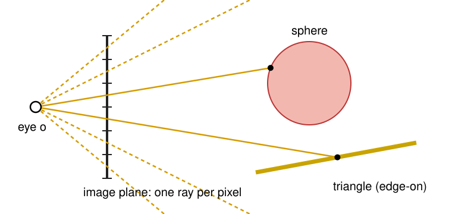
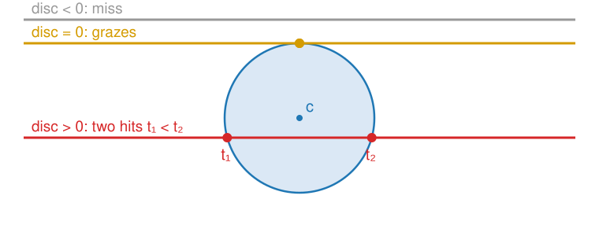
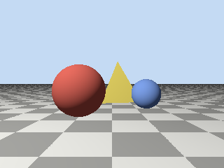

The 3D graphics day drew a scene by sending every triangle to the pixels it covers. Today we go the other way: from every pixel, send a ray into the scene and ask what it hits. This is ray casting, the first step of ray tracing.
A pixel is a ray from the eye: building it from the camera.
The nearest hit along the ray decides what the pixel sees.
Where a ray meets a sphere (a quadratic), a plane (one division) and a triangle (barycentric coordinates).
The normal at the hit, and shading.
Why it is slow: every pixel tests every object.
Slides titled The math give the formulas and proofs; the ideas are complete without them.
Recall: a pixel is a ray
From Meshes, coordinate spaces and projection: run the camera chain backwards, and a pixel is not a point but a ray from the eye through the pixel. Every point on that ray lands on the same pixel.
From From triangles to shaded pixels: the rasteriser asks “which pixels does this triangle cover?” and keeps the nearest one in the z-buffer.
outer loop
inner loop
rasterisation
for each triangle
for each pixel it covers
ray casting
for each pixel
for each object
The same two loops, swapped. Both find the same nearest surface for every pixel. What differs is what else each can ask cheaply: a ray can be sent anywhere, so shadows, mirrors and glass come almost for free (next unit).
Camera rays

The eye \mathbf o sits at the centre of projection; the image plane is at distance 1 in front of it.
Pixel (i, j) of a W \times H image: aim at its centre(i + \tfrac12, j + \tfrac12), mapped to [-1, 1] across the image.
The field of view sets how wide the image plane is: with a vertical field of view of 90°, the image plane reaches from -1 to +1 vertically (and \pm W/H horizontally).
Example: a 4 \times 2 image, 90°: pixel (1, 0) looks along (-0.5,\ 0.5,\ -1), up and to the left.
An orthographic camera sends parallel rays (all along -z) from points spread over the image plane, as the volume renderer did.
The math: the ray through a pixel
With pixel centre (i + \tfrac12, j + \tfrac12), rows counted from the top:
\mathbf r, \mathbf u, \mathbf f: the camera’s right, up and forward vectors (the look-at basis of the 3D graphics day); \varphi the vertical field of view.
Camera at the origin looking down -z: \mathbf r = (1, 0, 0), \mathbf u = (0, 1, 0), \mathbf f = (0, 0, -1).
Same thing as (PV)^{-1} applied to the pixel at two depths: that is how the volume renderer built its rays.
\mathbf r(t) = \mathbf o + t\,\mathbf d, \qquad t > 0
With a unit direction, t is the distance from the eye. Negative t is behind the camera: not seen.
A hit with an object is a value of t. Each object may give zero, one or two values.
The pixel sees the smallest positive t over all objects: the nearest hit. This is ray casting’s z-buffer.
What we need at the hit: which object, the point \mathbf p = \mathbf o + t\mathbf d, the normal there, and the surface’s colour.
Recall Seeing voxels: one ray per pixel through a volume, sampling and compositing all along it. Same rays; now they stop at the first surface.
Two ways to describe a surface
Implicit: the points where f(\mathbf x) = 0. A sphere is \lVert\mathbf x - \mathbf c\rVert^2 - r^2 = 0, a plane (\mathbf x - \mathbf p_0)\cdot\mathbf n = 0. Substitute the ray and solve for t: one equation in one unknown.
Parametric: points written as a formula of parameters. A triangle with corners \mathbf a, \mathbf b, \mathbf c is \mathbf a + u(\mathbf b - \mathbf a) + v(\mathbf c - \mathbf a), u, v \ge 0, u + v \le 1. Set it equal to the ray and solve for t, u, v: three equations in three unknowns.
The level-set day stored curves implicitly too (Curves as level sets): “where is f = 0?” is the same question.
A sphere: a line through a circle

Substituting the ray into the sphere gives a quadratic in t. Its discriminant tells the story:
negative: the ray misses; zero: it grazes; positive: it enters at t_1 and leaves at t_2.
Take the smaller positive root. Both negative: the sphere is behind the eye. t_1 < 0 < t_2: the eye is inside (inside a glass ball, say), and the ray hits at t_2.
Normal at the hit: (\mathbf p - \mathbf c)/r, pointing outwards.
The math: the sphere quadratic
\lVert\mathbf o + t\mathbf d - \mathbf c\rVert^2 = r^2 with a unit \mathbf d, and b' = \mathbf d\cdot(\mathbf o - \mathbf c), k = \lVert\mathbf o - \mathbf c\rVert^2 - r^2:
t^2 + 2b't + k = 0, \qquad t = -b' \pm \sqrt{b'^2 - k}.
Example: \mathbf o = \mathbf 0, \mathbf d = (0, 0, -1), \mathbf c = (0.5, 0, -5), r = 1: b' = -5, k = 24.25, b'^2 - k = 0.75, t = 5 \mp 0.866 = 4.134,\ 5.866.
Cancellation (recall Floating point): far from a big sphere, b'^2 \gg k and -b' - \sqrt{b'^2 - k} subtracts two nearly equal numbers. With b' = -10^4, k = 1 in float32: b'^2 - 1 rounds to 10^8 (floats near 10^8 are 8 apart), so the small root comes out as 0 instead of 5 \cdot 10^{-5}.
Stable form: compute the large root without cancellation, q = -(b' + \operatorname{sign}(b')\sqrt{b'^2 - k}), then the other from the product of the roots (Vieta): t_1 t_2 = k, so t = k/q.
A plane: one division
The ray meets the plane through \mathbf p_0 with normal \mathbf n at one value of t, unless it runs parallel to the plane (\mathbf d \cdot \mathbf n = 0: no hit, or the ray lies in the plane).
Example: floor y = -1, eye at the origin. Looking straight ahead, \mathbf d = (0, 0, -1): parallel, never reaches the floor. Looking down, \mathbf d = (0, -0.6, -0.8): hits at t = 1.667, the point (0, -1, -1.333).
A negative t: the plane is behind the eye (the floor seen when looking up: no hit).
Normal: \mathbf n everywhere.
The math: the plane
(\mathbf o + t\mathbf d - \mathbf p_0)\cdot\mathbf n = 0 \quad\Longrightarrow\quad t = \frac{(\mathbf p_0 - \mathbf o)\cdot\mathbf n}{\mathbf d\cdot\mathbf n}.
One dot product in the numerator, one in the denominator, one division.
\mathbf d\cdot\mathbf n = 0: division by zero; in floating point the result is \pm\infty (or NaN if the ray lies in the plane), which the “smallest positive t” rule simply ignores.
The sign of \mathbf d \cdot \mathbf n says from which side the ray arrives: negative = from the side \mathbf n points to (the front).
A triangle: barycentric coordinates
Recall From triangles to shaded pixels: a point in a triangle has barycentric coordinates(b_a, b_b, b_c), weights from areas that sum to 1; all three \ge 0 means inside.
The ray meets the triangle’s plane at one point.
Compute that point’s barycentric coordinates. Inside iff all three are \ge 0.
The same weights interpolate the vertex normals (smooth shading) and colours at the hit.
Example: (0.2, 0.3, 0.5) inside; (0.6, -0.1, 0.5) outside (beyond the edge opposite \mathbf b); (0.4, 0.6, 0) on the edge \mathbf a\mathbf b.
The math: ray–triangle as a 3 × 3 system
\mathbf o + t\mathbf d = \mathbf a + u\,\mathbf e_1 + v\,\mathbf e_2 with \mathbf e_1 = \mathbf b - \mathbf a, \mathbf e_2 = \mathbf c - \mathbf a:
\begin{bmatrix} -\mathbf d & \mathbf e_1 & \mathbf e_2 \end{bmatrix}\begin{bmatrix} t \\ u \\ v\end{bmatrix} = \mathbf o - \mathbf a, \qquad (b_a, b_b, b_c) = (1 - u - v,\ u,\ v).
Cramer’s rule: each unknown is a ratio of two determinants, and a 3\times3 determinant is a scalar triple product, a signed volume: \det[\mathbf x\ \mathbf y\ \mathbf z] = \mathbf x \cdot (\mathbf y \times \mathbf z). The Möller–Trumbore algorithm (1997) evaluates exactly these with two cross products.
\det \approx 0: the ray is parallel to the triangle’s plane. The sign of \det says which side was hit: a back-face test for free.
Hit iff u \ge 0, v \ge 0, u + v \le 1 and t > 0.
The math: ray-cast barycentrics are perspective-correct
The rasteriser interpolates on the screen, where perspective has squeezed distant parts. Its (b_a, b_b, b_c) from screen areas are wrong for 3D attributes; the fix was to interpolate f/w and 1/w and divide.
The ray finds the 3D point\mathbf p = \mathbf a + u\mathbf e_1 + v\mathbf e_2 itself. So (1 - u - v, u, v) are the barycentric coordinates in 3D: exactly what the 1/w correction recovers.
A ray caster never needs the correction (the demo’s test file checks the two agree to 10^{-6} on random triangles).
Normals and shading at the hit

Sphere: (\mathbf p - \mathbf c)/r. Plane: \mathbf n. Triangle: the face normal \mathbf e_1 \times \mathbf e_2, normalised, or the vertex normals blended with the barycentric weights.
If the ray hits the back of a surface, flip the normal towards the eye.
Shading as on the 3D graphics day: Lambert’s \max(0, \mathbf n\cdot\mathbf l) times the albedo, optionally Blinn–Phong highlights. Nothing new about shading yet; light that bounces is unit 4.
Other per-pixel outputs come for free: the deptht, the normal as a colour, the object id. Images like these are what the denoiser of unit 4 uses as guides.
640 × 480 pixels, 5000 triangles: 1.5 \cdot 10^9 tests for one image.
1920 × 1080 pixels, a mesh of 10^6 triangles: 2 \cdot 10^{12} tests, for one ray per pixel, per frame.
Most of these tests miss. Unit 3 (Tracing fast) skips whole groups of objects at once with boxes around them, and gets to roughly \log_2(\text{objects}) tests per ray.
A third way to find the hit, for shapes stored as signed distance fields (level sets): sphere tracing, marching along the ray in steps as long as the distance to the nearest surface.
Summary
Ray casting: for each pixel, for each object; the rasteriser’s two loops swapped, same visible surfaces.
A camera ray goes from the eye through the pixel centre; \mathbf r(t) = \mathbf o + t\mathbf d, and the pixel sees the smallest positive t.
Sphere: a quadratic; discriminant = miss, graze or two hits; compute it in the stable way. Plane: one division; parallel = no hit. Triangle: hit the plane, inside iff the barycentric coordinates are all \ge 0; they also interpolate normals and colours.
At the hit: the point, the normal, then shading as on the 3D graphics day.
Cost: pixels × objects. Next: shadows, mirrors and glass by sending more rays.